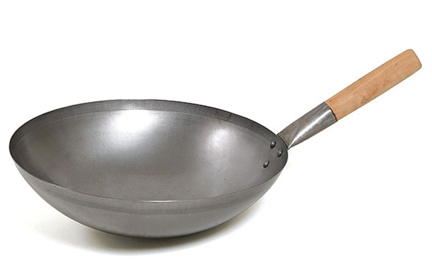

해빈이는 짜장면을 정말 좋아한다. 짜장면을 너무 좋아한 나머지 짜장면만 파는 중국집을 개업했다! 해빈이는 양손잡이여서 동시에 두 개의 웍(중국 냄비)을 사용하여 요리할 수 있다. 그러나 해빈이는 낭비를 매우 싫어하기 때문에 요리 할 때, 필요 이상 크기의 웍을 사용하지 않으며, 주문 받은 짜장면의 그릇 수에 딱 맞게 요리한다.

<웍>
예를 들어 짜장면 4그릇을 주문 받았는데 5그릇 이상을 요리하지 않으며, 4그릇을 요리할 수 있는 웍에 3그릇 이하의 요리를 하지 않는다.
해빈이가 5그릇을 주문 받았고, 해빈이가 가지고 있는 웍의 종류가 1, 3그릇 용이라면 처음에 1,3그릇용 웍을 동시에 이용하여 4그릇을 만들고 다음 1그릇용 웍을 이용하여 1그릇을 만들어 총 5그릇을 두 번의 요리로 만들 수 있다.
해빈이가 주문 받은 짜장면의 수와 가지고 있는 웍의 크기가 주어질 때, 최소 몇 번의 요리로 모든 주문을 처리할 수 있는지 출력하는 프로그램을 작성하시오.
첫 번째 줄에는 해빈이가 주문 받은 짜장면의 수N(1≤N≤10,000)과 가지고 있는 웍의 개수 M(1≤M≤100)이 주어진다. 두 번째 줄에는 웍의 크기 Si(1≤Si≤N)이 M개가 주어지며 같은 크기의 웍을 여러 개 가지고 있을 수 있다.
해빈이가 모든 주문을 처리하기 위해 해야 하는 최소 요리 횟수를 출력한다. 만약 모든 주문을 처리 할 수 없는 경우 -1을 출력한다.
Input:
5 2
1 3
Output:
2
Input:
6 2
1 3
Output:
2